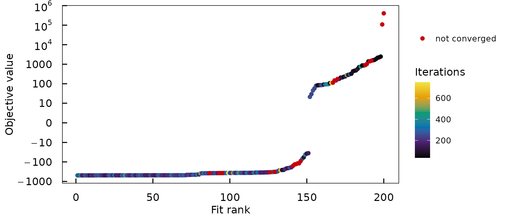
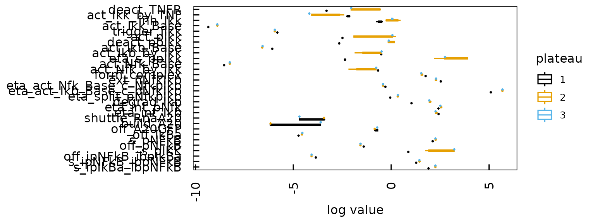

dMod2 [1] minimizes \(-2 \log L\), with a prior \(-2 \log\) of the posterior, by a
trust-region method on the exact gradient, trust(), run
from many starts by mstrust(). The fits below use the model
of Setting up models with the gauge of Symmetries, by fit.R,
onefit.R and plots.R of the project.
Derivations: Methods > Trust-region
optimization.
Trust-region method
Each iteration minimizes a quadratic model of the objective inside a
ball of radius \(r\); the ratio of
actual to predicted decrease decides on the step and the radius.
rinit is the first radius in the units of the parameters,
on the log scale 0.1 is ten percent of a rate. A trial
point at which the objective fails counts as rejected, so no bounds are
needed to keep a fit where the model can be evaluated.
stepControl$nonmonotone in \((0,
1)\) also accepts steps that raise the value; the result is then
the best iterate.
parlower and parupper set bounds.
boundary = "reflective" (default) keeps the iterates
strictly inside and reports the parameters held by a bound in
atBound; boundary = "clip" takes them out of
the subproblem and supports no quasi-Newton source.
Termination criteria
stopReason names the test that ended the run:
stopReason |
test | converged |
|---|---|---|
"gradient" |
largest gradient entry, scaled by the distance to a bound, at most
gtol
|
TRUE |
"fvalue" |
an accepted step changed the value by less than
ftol
|
TRUE |
"preddiff" |
predicted decrease below mtol
|
TRUE |
"step" |
step norm below xtol (default 0, off) |
TRUE |
"stagnation" |
five rejected steps in a row, value flat within
ftol
|
TRUE |
"radius" |
radius below rmin, or a step that no longer changes the
parameters |
FALSE |
"objfun" |
three failed evaluations in a row | FALSE |
"iterlim" |
iterlim iterations |
FALSE |
Only "gradient" tests first-order optimality; the value
and step tests are off in a quasi-Newton phase. ftol and
gtol belong at or above the numerical error of value and
gradient; model.R passes them as
tolControl.
Model Hessian
hessianMethod |
model Hessian | the objective returns |
|---|---|---|
"gn" |
Gauss-Newton | value, gradient, Gauss-Newton Hessian |
"exact" |
exact (Newton) | value, gradient, exact Hessian |
"bfgs" |
damped BFGS update, positive definite | value, gradient |
"sr1" |
symmetric rank-one update, possibly indefinite | value, gradient |
The exact Hessian needs second-order sensitivities,
deriv2 = TRUE or derivMode = "forward-reverse"
(Sensitivities). The quasi-Newton
settings are entries of qnControl:
| entry | default | controls |
|---|---|---|
hessianInit |
"gn" |
seed: Gauss-Newton at the start, "identity", or
"exact"
|
hessianReseed |
"never" |
"stall": reseed at the current iterate instead of
stopping on stagnation, at most eight times per phase |
qnMemory |
0 |
0 accumulates all updates; \(m > 0\) rebuilds from the last \(m\) pairs |
qnCautious |
1e-8 |
cautious test of BFGS; 0 turns it off |
qnRejected |
TRUE for "sr1"
|
SR1 also updates from rejected trial points |
With hessianInit = "identity" the objective needs to
return gradients only.
Hessian phases and reverse sweep
phases runs several sources in turn. Each phase is a
list with hessianMethod and optionally
iterlim, sweep and qnControl. A
phase ends on a value, model, step or stagnation stop or on its
iterlim and hands over to the next; "gradient"
ends the run. switches bounds the handovers (default: one
fewer than phases).
fit <- trust(obj, best, fixed = gauge, tolControl = tolerances,
phases = list(list(hessianMethod = "gn"), list(hessianMethod = "sr1")))
fit[c("phaseIterations", "evalBySource", "nSwitch", "stopReason")]sweep = "reverse" computes the gradient of a
quasi-Newton phase by one backward sweep, for models built with
derivMode = c("forward", "reverse"); by default a
"bfgs" or "sr1" phase sweeps backwards where
it can. phaseSweep reports the sweep per phase.
Sparse Hessians
sparse = TRUE solves the subproblem with a sparse
Gauss-Newton Hessian by sparse Cholesky factors, for many parameters
that each act on few conditions. The default "auto" selects
it for a plain Gauss-Newton run with at least 500 parameters and at most
5 % fill;
options(dMod2.sparseAuto = list(parameters = , fill = ))
changes the thresholds.
Arguments and result
| argument | default | controls |
|---|---|---|
rinit, rmax
|
0.1, 10
|
first and largest radius |
iterlim |
1000 |
iterations over all phases |
hessianMethod |
"gn" |
source of the model Hessian |
phases, switches
|
none | several sources in turn |
parlower, parupper,
boundary
|
none, "reflective"
|
bounds |
tolControl |
ftol, mtol, gtol
1e-6; xtol, rmin 0;
ctol 1e-6
|
termination; ctol for multiple shooting |
qnControl |
see above | quasi-Newton update |
stepControl |
thetaMax = 0.99995, nonmonotone = 0
|
step; further entries for multiple shooting |
minimize |
TRUE |
FALSE maximizes |
sparse |
"auto" |
sparse path |
blather, printIter,
traceFile
|
FALSE, FALSE, none |
trace in the result, printed values, CSV log |
Other arguments go to the objective, such as fixed. The
result, a trustfit, holds argument,
value, gradient, hessian,
iterations, neval, converged,
atBound and stopReason; with
blather = TRUE also the path of iterates and trial points.
vcov(fit) inverts half the Hessian.
Single fit
onefit.R fits from one start drawn with standard
deviation 0.5 around the best fit; mstrust() draws again
where the model cannot be evaluated:
# the start drawn with standard deviation 0.5 around the best fit, and drawn again where the
# model cannot be evaluated
best <- as.parvec(readRDS("results/fits.rds"))
set.seed(1)
fit <- mstrust(obj, best, fixed = gauge, sd = 0.5, fits = 1, rinit = 0.1, rmax = 10,
iterlim = 1000, tolControl = tolerances)[[1]]Multistart fitting
mstrust() fits from many starts and returns a list of
fits; as.parframe() sorts them by value. fit.R
draws 200 starts from the prior of Setting up models:
# 200 fits from starts drawn from the prior; a start at which the model cannot be evaluated is
# replaced by the next draw. helix.R runs the same fits as 100 array tasks of 2 fits each.
free <- setdiff(names(mu), names(gauge))
set.seed(1)
fits <- mstrust(obj, mu[free], fixed = gauge, sd = sigma[free], fits = 200, iterlim = 1000,
tolControl = tolerances, cores = getOption("dMod2.cores")) |>
as.parframe()Arguments go by name to trust(), to the sampler
(sd to rnorm()) or to the objective. All
starts are drawn before the fits are distributed, so
set.seed() reproduces a run for any cores.
| argument | default | controls |
|---|---|---|
center |
center of the starts, or a parframe of starts | |
fits |
20 |
number of fits |
samplefun |
"rnorm" |
sampler of the offsets |
startFromCenter |
FALSE |
first fit starts at center
|
retry, nTries
|
TRUE, 10
|
a failed fit restarts from the next draw |
cores |
1 |
parallel fits, or c(fits = , conditions = )
|
optmethod |
"trust" |
optimizer, e.g. "trustL1"
|
output, cautiousMode
|
FALSE |
write every fit to resultPath/name/
|
msParframe() draws starts from a separate seed, so
several runs can share them; load.parlist() reads fits
written by output = TRUE. helix.R runs the 200
fits as 100 array tasks (Remote
computing):
c(fits = nrow(fits), converged = sum(fits$converged), best = min(fits$value),
withinOne = sum(fits$value < min(fits$value) + 1))
#> fits converged best withinOne
#> 200.0000 180.0000 -488.6748 13.0000The waterfall plot shows the sorted values; each plateau is a local optimum, the length of the plateau the size of the basin of attraction:
# every fit on a pseudo-log scale; each plateau is a local optimum
plotValues(fits, pseudoLog = TRUE)
The parameters that differ by more than 0.1 between the plateaus within 5 of the best:
pl <- plotPars(fits, value < min(value) + 5)
med <- with(pl$data, tapply(parvalue, list(name, step), median))
differ <- rownames(med)[apply(med, 1, function(m) diff(range(m, na.rm = TRUE))) > 0.1]
pl %+% subset(pl$data, name %in% differ) +
coord_flip() +
scale_x_discrete(limits = rev) +
labs(x = NULL, y = "log value", color = "plateau")
#> Warning: <ggplot> %+% x was deprecated in ggplot2 4.0.0.
#> ℹ Please use <ggplot> + x instead.
#> This warning is displayed once per session.
#> Call `lifecycle::last_lifecycle_warnings()` to see where this warning was
#> generated.
Comparison of Hessian sources
optimizers.R fits from the same 100 starts with
Gauss-Newton, BFGS and SR1 on the reverse gradient, the exact Hessian,
and Gauss-Newton followed by BFGS. hits counts the starts
that end within 5 of the best value:
opt <- readRDS("results/optimizers.rds")
top <- min(opt$value, na.rm = TRUE)
tapply(opt$value < top + 5, factor(opt$method, unique(opt$method)), sum, na.rm = TRUE)
#> Gauss-Newton BFGS SR1 exact GN, then BFGS
#> 24 14 9 20 5Costs and the full comparison: Methods > Forward and reverse derivatives on the Oppelt fit.
L1 penalties
trustL1() adds \(\sum_i
\lambda_i \lvert \theta_i - \mu_i \rvert\) for the parameters
named in mu, with strength lambda. A penalized
parameter stays at the reference until the data pull with a force above
\(\lambda_i\); a scan over
lambda selects the parameters that differ.
one.sided = TRUE penalizes one side only, gate
lets parameters leave upward only, fuse penalizes
differences within blocks of parameters. Bounds and tolerances are those
of trust(); mstrust(optmethod = "trustL1")
runs it from many starts. Details: Methods > L1
penalties.
Multiple shooting
Multiple shooting integrates segments of the time axis from separate node values and makes continuity a constraint, which helps for oscillating or spiking systems (Methods > Multiple shooting). It is a control of the objective:
obj <- normL2(data, g * x * p, multipleShootingControl = TRUE)
fit <- trust(obj, start)
fit$multipleShooting$violation
controls(obj, "multipleShootingControl") <- NULL # single shooting againThe chain must be g * x * p with one Xs()
built on odemodel(..., includeTimeZero = FALSE). Not
available with it: hessianMethod = "exact", several phases,
switches, hessianReseed,
qnMemory, nonmonotone,
boundary = "clip", minimize = FALSE,
traceFile.
entry of multipleShootingControl
|
default | controls |
|---|---|---|
nodes |
"auto" |
"auto", "transitions", or node times |
growth, misfit
|
10, 3
|
thresholds at which "auto" cuts a segment |
minPoints |
states + 1 | data points per half of a cut |
charts |
all linear |
"log10", "linear" or "angle"
per state |
scale |
from the data | scale of the gaps and node steps |
init |
"data" |
node values: "data", "spline",
"simulation" or a list |
breaks |
none | node times without continuity |
entry of stepControl
|
default | controls |
|---|---|---|
acceptance |
"filter" |
"filter", "merit" or
"natural"
|
soc |
TRUE |
second-order correction of a rejected step |
anneal |
TRUE |
penalty on the gaps raised in stages |
twoPhase, restore,
regularize
|
off | further globalizations |
converged = TRUE requires the scaled gaps below
tolControl$ctol. The result has a list
multipleShooting with nodes,
gaps, violation and the counts of the
globalization.
Reference: trust(), mstrust(),
trustL1(), msParframe(),
as.parframe(), load.parlist(),
plotValues(), plotPars(),
normL2()